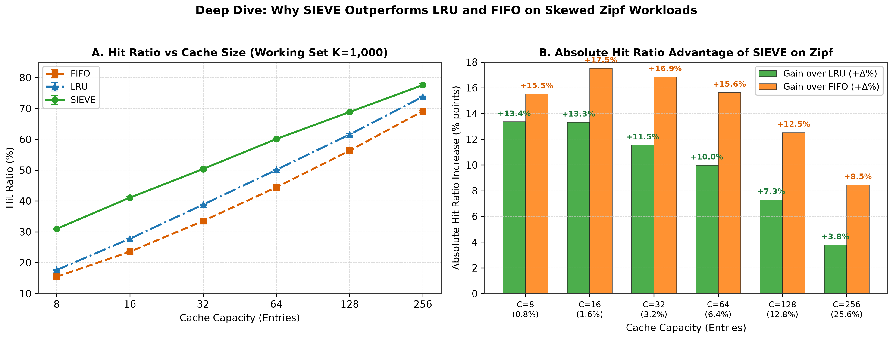
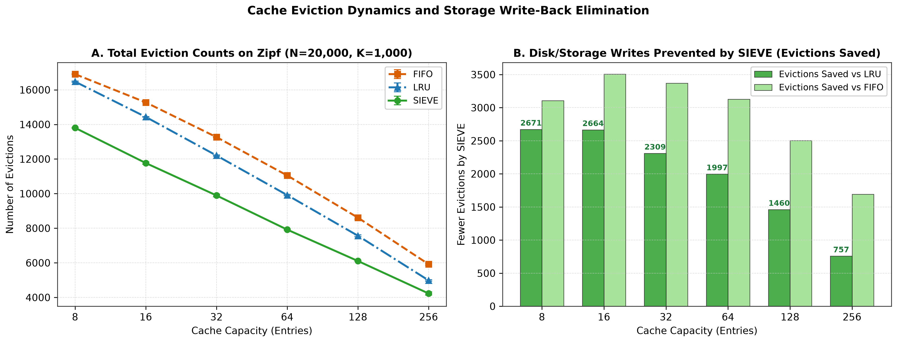
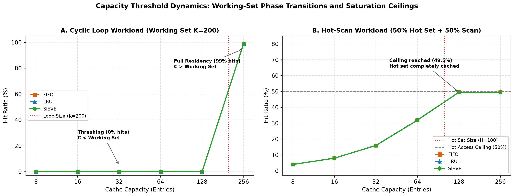
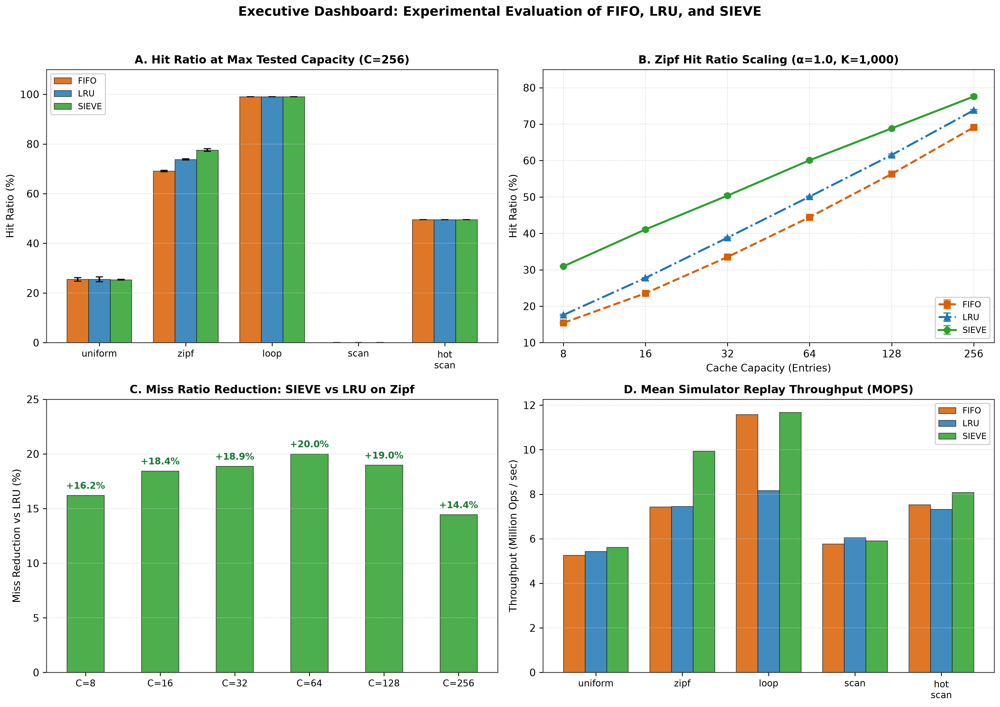

Candidate: duckydodo (chitta5828@gmail.com)
Course / Scope: Individual Operating Systems Project (Single-Threaded C11 Engine)
Reference Paper: “SIEVE is Simpler than LRU: An Efficient Turn-Key Eviction Algorithm for Web Caches”
Yazhuo Zhang, Paraschos Koutris, Rebecca Bian — USENIX NSDI 2024
Doubly-linked list, hash table, strict trace parser, single ownership memory model.
Up to +13.36% hit gain on Zipf over LRU; 2.34× faster on resident hits.
51,604 automated test assertions passing cleanly with 0 compiler warnings.
1. One-Hit Wonder Fragility: Empirical CDN traces reveal that 60%–80% of unique objects are accessed only once. LRU unconditionally promotes every miss to MRU Head, pushing active items down the stack.
2. Lock Contention on Hits: Every hit in LRU requires unlinking and splicing the node to the head (6 pointer writes). In multi-core caches, read hits turn into structural writes, collapsing throughput under locks.
Prior attempts to fix LRU (e.g. ARC, 2Q, LIRS, TinyLFU) introduced complex multi-queue architectures, ghost lists, and frequency sketches.
Can we design an eviction policy that is simpler than LRU, requires zero pointer mutations on hits, discards one-hit wonders effortlessly, and outperforms LRU on web workloads?
➔ Answered affirmatively by Zhang et al. (USENIX NSDI 2024).
To evaluate SIEVE rigorously, we implemented and evaluated three fundamental eviction algorithms under an identical architectural harness:
| Dimension | FIFO (First-In, First-Out) | LRU (Least Recently Used) | SIEVE (Zhang et al. 2024) |
|---|---|---|---|
| Hit Operation | No-op ($O(1)$) | Splice to MRU Head ($O(1)$) | In-place bit flip: visited = 1 |
| Pointer Writes on Hit | 0 | 6 pointer updates | 0 pointer updates |
| Eviction Selection | Always Tail node ($O(1)$) | Always Tail node ($O(1)$) | Moving hand scan (Amortized $O(1)$) |
| Object Metadata | 2 list pointers | 2 list pointers | 1 bit (visited) + 2 list pointers |
| One-Hit Wonders | Traverses entire queue | Flushes hot items to Tail | Lazy demotion & quick discard |
| Worst-Case Eviction | $O(1)$ | $O(1)$ | $O(C)$ (if all items visited) |
| Bélády's Anomaly | Susceptible | Immune (Stack Algorithm) | Susceptible (Non-stack algorithm) |
Clock (Second-Chance) operates as a circular buffer and inserts new items at the hand's current position. SIEVE inserts new items at the Head, while the eviction hand operates independently from Tail to Head. This architectural difference allows quick eviction of one-hit wonders before they traverse the queue!
LRU does eager promotion on every hit (moving to head). SIEVE retains items in their FIFO order and performs lazy demotion during eviction passes: visited items survive by resetting their bit, while unvisited items are filtered out.
[HEAD] [TAIL]
| |
v v
[ Node E ] <-> [ Node D ] <-> [ Node C ] <-> [ Node B ] <-> [ Node A ]
v = 0 v = 1 v = 0 v = 1 v = 1
^
|-- Eviction Handhand = NULL.node->visited = true.
visited = false.
hand == NULL, initialize hand = Tail.
hand towards Head via hand->prev:
hand->visited == true: reset visited = false, advance hand = hand->prev.
hand->visited == false: Victim found!
/* CRUCIAL: Save hand's next location BEFORE victim is freed! */
dlist_node_t *next_hand = victim->prev;
dlist_remove(cache->list, victim);
ht_remove(cache->ht, victim->key);
dlist_node_free(victim);
cache->hand = next_hand; /* If NULL, resets to Tail on demand */
Failing to advance hand before unlinking leads to a classic OS use-after-free bug.
Each visited bit can only be set once per hit. In eviction, clearing the bit costs $O(1)$ work charged to the previous hit. Thus, across $N$ accesses, the amortized cost per eviction is $O(1)$.
+-------------------------------------------------------------+
| Benchmark Runner (bin/benchmark) |
| Strict Line Parser (rejects junk) | RFC 4180 CSV Export |
+-------------------------------------------------------------+
|
v
+-------------------------------------------------------------+
| Cache Engine (cache_t) |
| Single Memory Owner | Statistics Tracking (hits, evictions)|
+-------------------------------------------------------------+
| |
v v
+-----------------------------+ +---------------------------+
| Fixed-Bucket Hash Table | | Intrusive Doubly-Linked |
| - Power-of-2 sizing (M >= 2C)| | List (dlist_t) |
| - MurmurHash3 finalizer | | - O(1) head/tail ops |
| - Singly-linked bucket chain| | - Intrusive dlist_node_t |
+-----------------------------+ +---------------------------+
|
v
+-------------------------------------------------------------+
| Polymorphic Policy Interface (cache_policy_ops_t) |
| FIFO (fifo_ops) | LRU (lru_ops) | SIEVE (sieve_ops) |
+-------------------------------------------------------------+
cache_t is the exclusive owner of all heap nodes. The hash table and doubly-linked list never allocate or free nodes; they are purely non-owning indices.
Bucket count $M = 2^{\lceil \log_2(2C) \rceil}$. Sizing to at least $2C$ guarantees load factor $\alpha \le 0.5$ at maximum capacity. Employs MurmurHash3 64-bit integer mix:
uint64_t fmix64(uint64_t k) {
k ^= k >> 33; k *= 0xff51afd7ed558ccdULL;
k ^= k >> 33; k *= 0xc4ceb9fe1a85ec53ULL;
return k ^ (k >> 33);
}
Clean function pointer table: on_hit(), on_insert(), evict(), and free_state(). Enables fair, zero-bias comparative benchmarking.
Trace parser in src/benchmark.c enforces strict trace specifications:
1 garbage).Nodes track presence state with explicit bit flags:
node->in_list (asserted on insert/remove).node->in_ht (asserted on bucket link/unlink).dlist_node_free() asserts both flags are false before freeing.
High-resolution nanosecond timing via clock_gettime(CLOCK_MONOTONIC):
| Test Target | Source File | Assertions | Status | Primary Validations |
|---|---|---|---|---|
| Data Structures | tests/test_ds.c |
479 / 479 | PASS | List head/tail invariants, ht collision chaining, power-of-2 bucket sizing. |
| Cache Policies | tests/test_policies.c |
320 / 320 | PASS | FIFO eviction order, LRU MRU-promotion, SIEVE hand traversal & wraparound. |
| Trace Generator | tests/test_tracegen.c |
50,483 / 50,483 | PASS | Uniform bounds, Zipfian rank skew, looping modulus, scan uniqueness. |
| Benchmark Runner | tests/test_benchmark.c |
313 / 313 | PASS | Strict parsing, malformed key rejection, CSV header/format compliance. |
| Python Experiment Suite | tests/test_experiment_runner.py |
9 / 9 | PASS | Data aggregator, summary statistics, figure generation pipeline. |
| Workload | Parameters | OS & Cache Phenomenon Stressed |
|---|---|---|
| `zipf` | $N=20,000, K=1,000, \alpha=1.0$ | Heavy-tailed web/CDN access; power-law popularity; tests one-hit wonder retention. |
| `uniform` | $N=20,000, K=1,000$ | Zero temporal locality; i.i.d. access; verifies theoretical baseline $C/K$. |
| `loop` | $N=20,000, K=200$ | Cyclic sequential scans; demonstrates the working-set capacity cliff. |
| `scan` | $N=5,000$ unique keys | Single-pass sequential stream; tests scan pollution resistance ($0\%$ hits). |
| `hot_scan` | $N=20,000, H=100$ (50/50 mix) | Interleaved hot working set + streaming scan; tests retention under scan noise. |
Stochastic workloads (zipf, uniform, hot_scan) evaluated across 3 independent pseudo-random seeds (42, 1337, 99991). Reported metrics show mean and sample standard deviation.
For every seed and capacity, traces are pre-generated to disk. FIFO, LRU, and SIEVE execute against the exact same sequence of access keys, eliminating trace variance.
Capacities $C \in \{8, 16, 32, 64, 128, 256\}$ span from highly constrained ($0.8\%$ of working set) to fully generous ($25.6\%$), capturing all operating regimes.
| Cap ($C$) | $C/K$ | FIFO | LRU | SIEVE | Gain vs LRU | MRR |
|---|---|---|---|---|---|---|
| 8 | 0.8% | 15.44% | 17.60% | 30.96% | +13.36% | +16.21% |
| 16 | 1.6% | 23.56% | 27.77% | 41.09% | +13.32% | +18.44% |
| 32 | 3.2% | 33.52% | 38.83% | 50.37% | +11.54% | +18.86% |
| 64 | 6.4% | 44.44% | 50.10% | 60.08% | +9.98% | +20.00% |
| 128 | 12.8% | 56.31% | 61.53% | 68.83% | +7.30% | +18.98% |
| 256 | 25.6% | 69.12% | 73.80% | 77.58% | +3.78% | +14.43% |
SIEVE systematically beats LRU across all evaluated cache capacities. The advantage peaks at constrained cache sizes ($+13.36\%$ at $C=8$), eliminating up to 20.00% of all cache misses that occur under LRU!

Left: Absolute hit ratio vs capacity. Right: Miss Ratio Reduction (MRR) of SIEVE over LRU.
When the working set fits completely ($C=256 > K=200$), the cache reaches 99.0% hit ratio. This isolates the pure runtime cost of a hit:
61.03 ns
16.39 MOPS
6 pointer updates on every hit to move node to MRU head.
26.09 ns
38.33 MOPS
1 bit flip: visited = true. Zero pointer mutations.
Outcome: SIEVE is 2.34× faster than LRU on hit-dominated execution even in single-threaded user space!
By definition, $\text{evictions} = \text{misses} - C$. Because SIEVE reduces misses, it directly suppresses storage write-back volume:

Measured eviction count across workloads. Lower is better (fewer write-backs).
Sequential cyclic access reveals a sharp step function at the working set boundary:
50% accesses to a 100-key hot set + 50% streaming scan keys:
Under i.i.d. uniform random requests, measured hit ratio closely tracks theoretical expectation $C / K$:
• $C=8$: Theoretical 0.80% | Observed 0.83%
• $C=64$: Theoretical 6.40% | Observed 6.45%
• $C=256$: Theoretical 25.60% | Observed 25.36%

Left: Loop cliff transition at $C=200$. Right: Hot-scan theoretical ceiling at 49.50%.
Our generator generates stationary distributions with fixed popularity ranks. Real-world CDN traces exhibit:
The simulator operates on homogeneous 64-bit integer keys. Real web caches manage:
The simulator is purposefully single-threaded to isolate algorithmic complexity:
Despite these necessary undergraduate scope boundaries, our results provide rigorous empirical validation of SIEVE's core algorithmic premise: lazy demotion over a FIFO queue with in-place hit bit updates systematically outperforms LRU on power-law distributed workloads while completely eliminating pointer mutation on hits.

Executive 2x2 dashboard summarizing hit ratios, miss reductions, runtimes, and evictions.
Hash table load factor $\le 0.5$, MurmurHash3 mix, intrusive doubly linked list, memory ownership contract.
In-place bit flips, lazy demotion, eviction hand traversal, pointer survival invariant, amortized $O(1)$.
Workload design, power-law Zipf skew, working-set transitions, nanosecond timing via CLOCK_MONOTONIC.
Project Repository: C11 Simulator & Benchmark Suite | Tests: 51,604 / 51,604 Passing
Full Technical Report: REPORT.md | Viva Guide: VIVA_PREPARATION.md | Demo Script: DEMO_SCRIPT.md